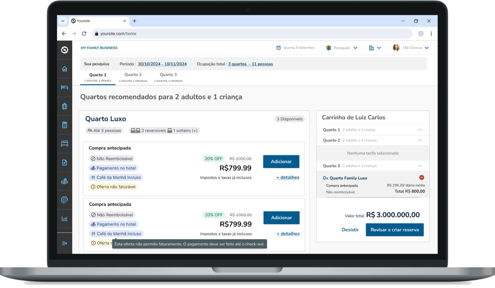

Redesigning how hotels create and edit reservations
A discovery with six hotels led to two connected projects in TOTVS PMS: a new reservation creation flow and a refactored editing experience. It is also a story about adapting the design when a key technical dependency was deprioritized.
Creating and editing reservations is the core daily task of a hotel’s reservations team — and the part of TOTVS PMS they touch most. The existing flows were dense, slow for large bookings and disconnected from how teams actually sell.
As the designer responsible for the PMS reservation journey, I led the research, defined the flows and interfaces, and ran the usability tests that guided each iteration.
I conducted six 90-minute interviews with reservation teams — from an independent 57-room hotel to a 50-hotel chain — with a teammate taking notes. A 22-question script covered the full service cycle: first contact, data collected, information consulted, tools and workarounds, follow-up and pains. I then synthesized the answers question by question to compare practices across hotels.
“The biggest challenge is using several platforms and tabs at the same time to make just one reservation.”— Reservations team, 11-hotel chain
Teams checked availability in the PMS but prices on the booking engine or the hotel website. Integration delays of up to 3 hours caused mismatches, double entry and overbooking.
Spreadsheets and notebooks tracked payments, pending bookings, no-shows and unpublished rates. One supervisor entered 700 reservations by hand in a single month.
The real sequence is availability → quote → reservation. Teams negotiate on the phone and need to send a quote immediately, keeping unpaid bookings “to be confirmed”.
Changing dates, guests or rates after booking was slow — a 60-room group froze the system for 40 minutes — and teams lacked a clear record of what had been negotiated.
Follow the real sequence. Search, quote and book in one flow.
Always show the money. Any change displays its impact on the price.
One place per task. No more switching tabs to finish a booking.
The new creation flow mirrors how teams sell: search by period and party, compare recommended rooms with each rate’s conditions (refundability, payment, board), build a cart that totals the quote, then review and confirm.
It was designed alongside a planned integration between the PMS and the hotels’ rate management, which would bring the correct prices into the platform automatically — solving the first pain from the discovery.

Most of a reservation team’s day is spent on bookings that already exist: extending a stay, adding a guest, renegotiating a rate. I refactored the editing experience around the same principles, splitting it into two focused tabs:
- 01Summary — booker, stay, guarantee and guests on a single editable page.
- 02Quote — rate details and a calendar to adjust prices by period, by weekday or day by day.
- 03A persistent side panel with the reservation status and a warning whenever a change affects the price, comparing the original and the new quote before anything is confirmed.

Participants valued editing the stay and the quote in one place and comparing the original with the new quote — “much more fluid and less bureaucratic”.
Iterated after the test: the small “Review” link became a “Review quote” button, a price-impact warning was added, the rate table became a calendar and totals now include taxes.
The rate-management integration was later deprioritized. Without it, the prices in the PMS did not always match what hotels had negotiated — the same pain we had heard in the discovery — and hotels began to report it.
Rather than wait for the integration, I adapted the flow so teams could set the right price themselves. The Edit values modal lets them select a period or weekdays and apply a change — add or subtract a value, a percentage increase or discount, or a manual rate — or type each night individually. The original rate stays visible, a reason is recorded and every change can be undone before saving.


The calendar view with each night’s rate, discount, board and total was the most valued element. The main friction: the three methods were split across two tabs and “select from calendar” overlapped with “day by day”. Next steps include merging them into a single entry point and defining how the calendar scales to long stays, from 20 nights to a year.
Treat dependencies as design risks
A well-rated flow still failed users when the integration it relied on moved. Today I plan a fallback for every critical dependency from the start.
Complaints are research too
Client reports confirmed a pain already present in the discovery and gave us the urgency to solve it in the interface.
Flexibility needs guardrails
Manual pricing works when the original value, the reason and an undo are always visible.